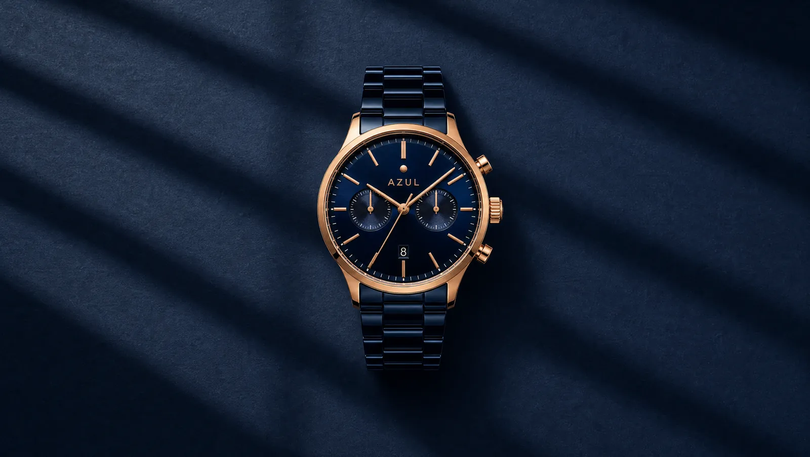
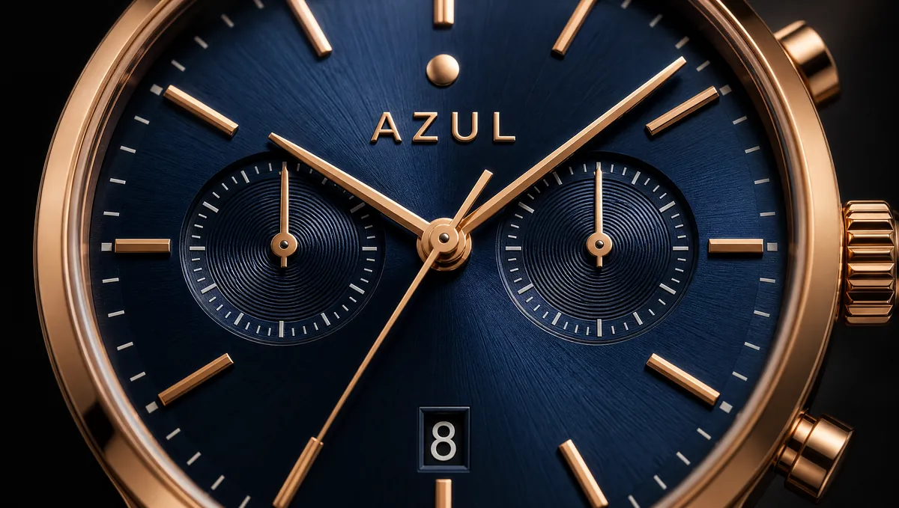
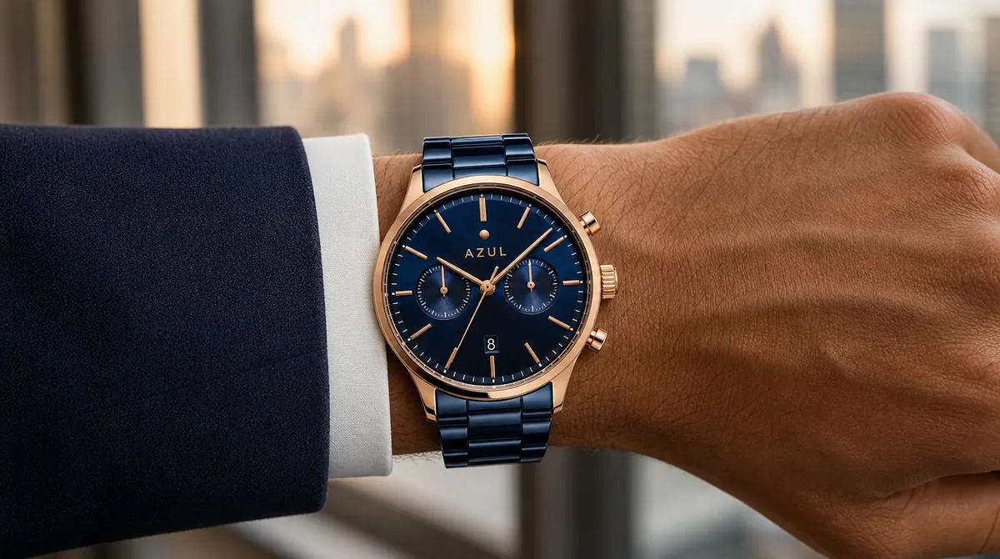
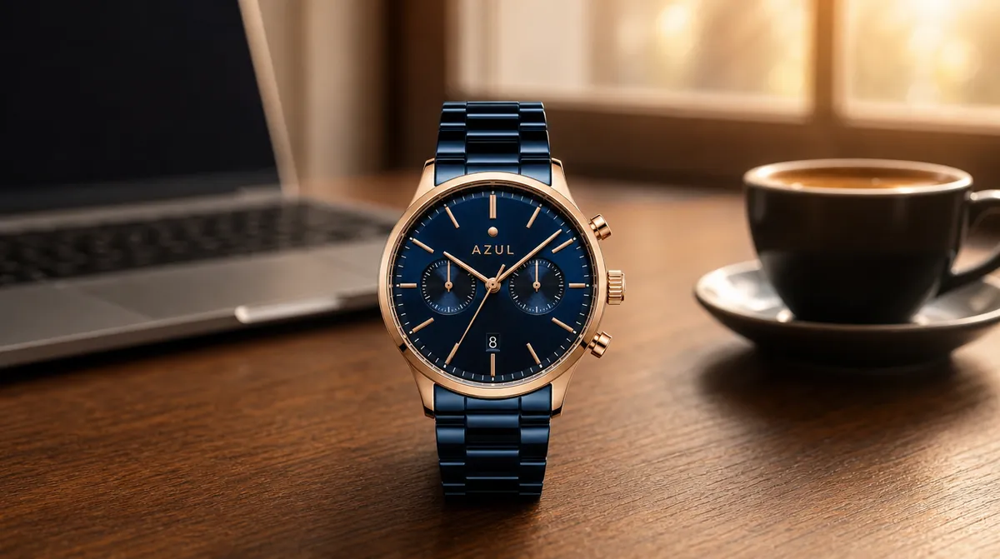
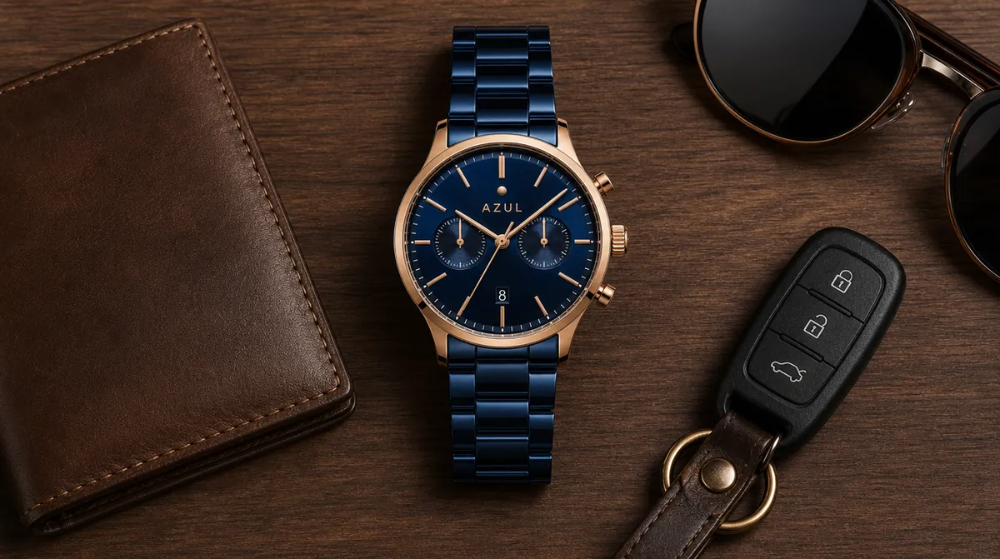
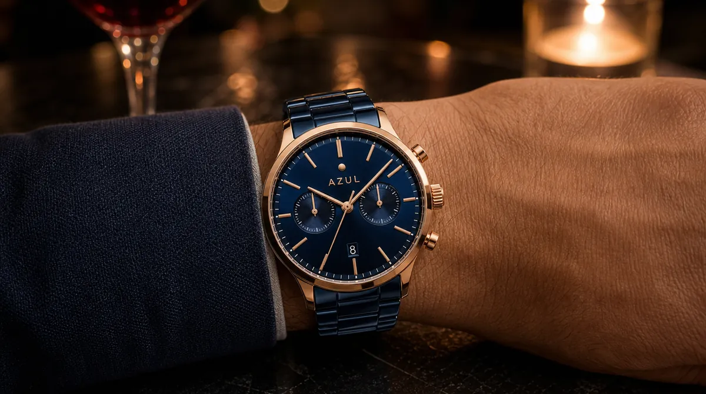
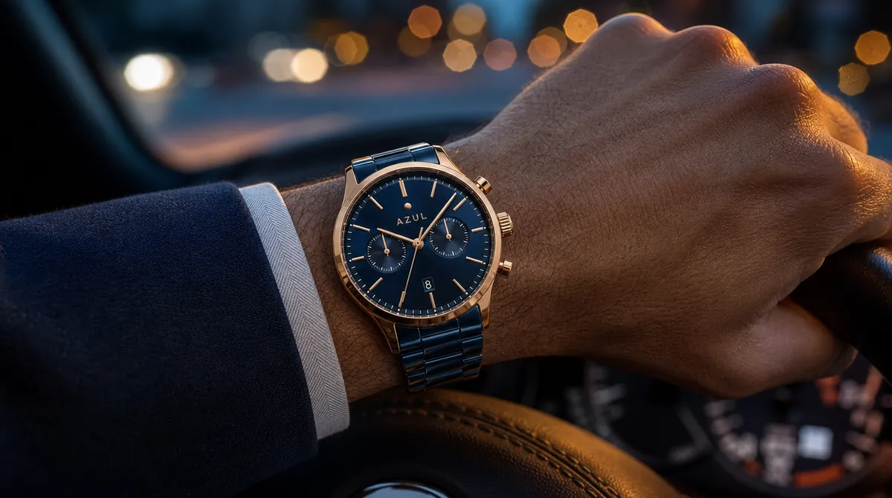
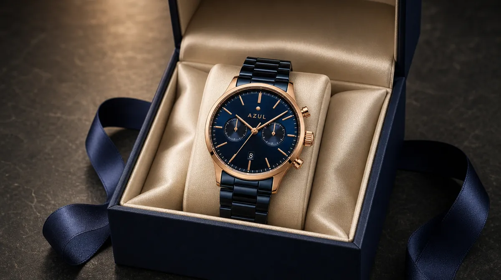

AZUL Cronógrafo · Oro rosa
$ 189.000
Precio ilustrativo: AZUL es una marca ficticia creada como pieza de portfolio.
- Cronógrafo con dos subesferas funcionales
- Resistente al agua 5 ATM
- Ventana de fecha
- Malla de eslabones de acero
Cronógrafo de acero con caja oro rosa y esfera azul sunburst. Presencia de reloj de lujo, para todos los días.

La esfera sunburst cambia de tono con cada movimiento de la luz. El oro rosa le da calidez al acero y el azul hace el resto. Un reloj que llama la atención sin pedirla.
De cerca

Para cada momento






El azul de la esfera se aclara al sol y se vuelve profundo en interiores. Así se ve en la muñeca, en un día cualquiera.
Video generado con IA con fines ilustrativos. No es el testimonio de un cliente.
AZUL Cronógrafo · Oro rosa
$ 189.000
Precio ilustrativo: AZUL es una marca ficticia creada como pieza de portfolio.
Un detalle azul y oro rosa que se nota sin hacer ruido.